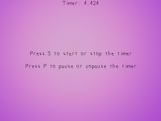

你已经学会编写一个非常简单的计时器了。这里，你将学习编写一个包含了start，stop，pause函数的timer类，你在编写一个游戏时会用到它。//Timer类
class Timer
{
private:
//计时器启动时的时间
int startTicks;
//计时器暂停时保存的滴答数
int pausedTicks;
//计时器状态
bool paused;
bool started;
public:
//初始化变量
Timer();
//各种时钟动作
void start();
void stop();
void pause();
void unpause();
//获取计时器时间
int get_ticks();
//检查计时器状态
bool is_started();
bool is_paused();
};
这里我们有timer类的纲要。
"startTicks"是计时器的起始点，"pausedTicks"是计时器暂停时所保存的时间。
构造函数对变量进行了初始化，我很确定你能明白
函数
"startTicks"是计时器的起始点，"pausedTicks"是计时器暂停时所保存的时间。
构造函数对变量进行了初始化，我很确定你能明白
start(), stop(), pause(), 和 unpause() 函数的作用。
函数
get_ticks() 可获取计时器的时间，以毫秒为单位。is_started() 检查计时器是否已经启动，is_paused() 检查计时器是否已暂停。Timer::Timer()
{
//初始化各种变量
startTicks = 0;
pausedTicks = 0;
paused = false;
started = false;
}
这里我们有一个构造函数，它初始化了许多变量。这没有什么需要解释的。
void Timer::start()
{
//启动计时器
started = true;
//将计时器设为非暂停状态
paused = false;
//获取当前时钟时间
startTicks = SDL_GetTicks();
}
现在当我们启动计时器时，我们将started状态设为true，将计时器设为非暂停状态，然后我们使用
SDL_GetTicks()获得当前时间，并将它设为计时器的启动时间。void Timer::stop()
{
//停止计时器
started = false;
//将计时器设为非暂停状态
paused = false;
}
当我们停止计时器的时候，我们将started状态设为false，并将计时器设为非暂停状态。
int Timer::get_ticks()
{
//如果计时器正在运行
if( started == true )
{
//如果计时器暂停中
if( paused == true )
{
//返回计时器暂停时的滴答数
return pausedTicks;
}
else
{
//返回当前时间减去启动时间的差值
return SDL_GetTicks() - startTicks;
}
}
//如果计时器没有在运行
return 0;
}
这里我们有获取计时器时间的函数。
首先，我们检查一下计时器是否在运行。如果是的话，然后检查它是否处于暂停状态。
如果计时器暂停中，我们返回计时器暂停时所保存的时间。我们将在后面讨论暂停和取消暂停。
如果计时器没有暂停，我们返回从计时器启动到当前的时间差。你可以看出来，这与上一课中所提到的公式完全相同。
如果计时器没有运行，函数将返回0。
首先，我们检查一下计时器是否在运行。如果是的话，然后检查它是否处于暂停状态。
如果计时器暂停中，我们返回计时器暂停时所保存的时间。我们将在后面讨论暂停和取消暂停。
如果计时器没有暂停，我们返回从计时器启动到当前的时间差。你可以看出来，这与上一课中所提到的公式完全相同。
如果计时器没有运行，函数将返回0。
void Timer::pause()
{
//如果计时器正在运行但没有暂停
if( ( started == true ) && ( paused == false ) )
{
//暂停计时器
paused = true;
//计算暂停时的滴答数
pausedTicks = SDL_GetTicks() - startTicks;
}
}
现在当我们想要暂停计时器时，首先我们检查一下计时器是否正在运行并且还没有暂停，如果我们可以暂停计时器，我们将paused状态设为true，并且将计时器的时间保存在"pausedTicks"中。
void Timer::unpause()
{
//如果计时器暂停中
if( paused == true )
{
//取消暂停
paused = false;
//重置开始时间
startTicks = SDL_GetTicks() - pausedTicks;
//重置暂停时间
pausedTicks = 0;
}
}
当我们想要取消暂停时，我们先检查一下计时器是否暂停中。
如果是的，我们将paused状态设为false，然后将开始时间设为当前时钟时间减去计时器暂停时保存时间之差。
最后，我们将"pausedTicks"设为0，没有什么真正的原因，我只是不喜欢杂散变量。
如果是的，我们将paused状态设为false，然后将开始时间设为当前时钟时间减去计时器暂停时保存时间之差。
最后，我们将"pausedTicks"设为0，没有什么真正的原因，我只是不喜欢杂散变量。
bool Timer::is_started()
{
return started;
}
bool Timer::is_paused()
{
return paused;
}
这里是检查计时器状态的函数。我很确信你能搞清楚它们是做什么的。
//新建计时器
Timer myTimer;
//生成信息表面
startStop = TTF_RenderText_Solid( font, "Press S to start or stop the timer", textColor );
pauseMessage = TTF_RenderText_Solid( font, "Press P to pause or unpause the timer", textColor );
现在在我们的main函数中，在我们完成初始化和文件加载后，我们声明了一个计时器对象并渲染了我们的信息表面。
//启动计时器
myTimer.start();
//当用户还没退出时
while( quit == false )
{
在我们进入主循环前，我们先启动计时器。
//当有事件需要处理
while( SDL_PollEvent( &event ) )
{
//如果有一个按键被按下
if( event.type == SDL_KEYDOWN )
{
//如果“s”被按下
if( event.key.keysym.sym == SDLK_s )
{
//如果计时器在运行
if( myTimer.is_started() == true )
{
//停止计时器
myTimer.stop();
}
else
{
//启动计时器
myTimer.start();
}
}
这里我们处理了按键按下的事件。当“s”被按下时，如果计时器还在运行，就将它停止，否则就启动它。
//如果“p”被按下
if( event.key.keysym.sym == SDLK_p )
{
//如果计时器暂停中
if( myTimer.is_paused() == true )
{
//取消暂停
myTimer.unpause();
}
else
{
//暂停计时器
myTimer.pause();
}
}
}
现在，当“p”被按下，如果计时器正在暂停中，我们就取消其暂停，否则我们将其暂停。
//保存计时器时间的字符串
std::stringstream time;
//将计时器的时间转换为字符串
time << "Timer: " << myTimer.get_ticks() / 1000.f;
//渲染时间表面
seconds = TTF_RenderText_Solid( font, time.str().c_str(), textColor );
//应用时间表面
apply_surface( ( SCREEN_WIDTH - seconds->w ) / 2, 0, seconds, screen );
//释放时间表面
SDL_FreeSurface( seconds );
//更新窗口
if( SDL_Flip( screen ) == -1 )
{
return 1;
}
}
在事件处理完并且背景表面和信息表面都blit完毕后，我们将计时器的时间显示在屏幕上。
首先，我们创建一个string stream对象，然后我们将计时器的时间放入这个string stream。由于我们需要显示的计时器的时间是以秒为单位，又因为1秒=1000毫秒，所以我们将时间除以1000。
下面，我们使用保存着时间的string创建一个表面。然后这个新建的显示了计时器时间的表面被blit到窗口上，接着我们将这个表面释放，因为我们已经用完它了。之后，窗口被更新，我们继续运行主循环。
首先，我们创建一个string stream对象，然后我们将计时器的时间放入这个string stream。由于我们需要显示的计时器的时间是以秒为单位，又因为1秒=1000毫秒，所以我们将时间除以1000。
下面，我们使用保存着时间的string创建一个表面。然后这个新建的显示了计时器时间的表面被blit到窗口上，接着我们将这个表面释放，因为我们已经用完它了。之后，窗口被更新，我们继续运行主循环。